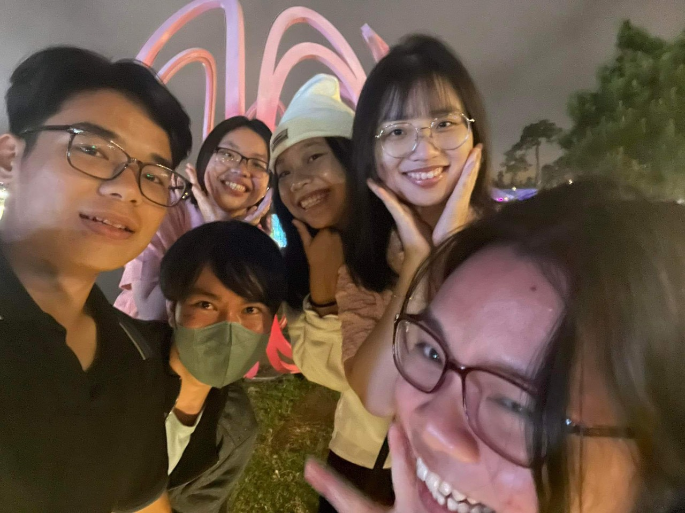
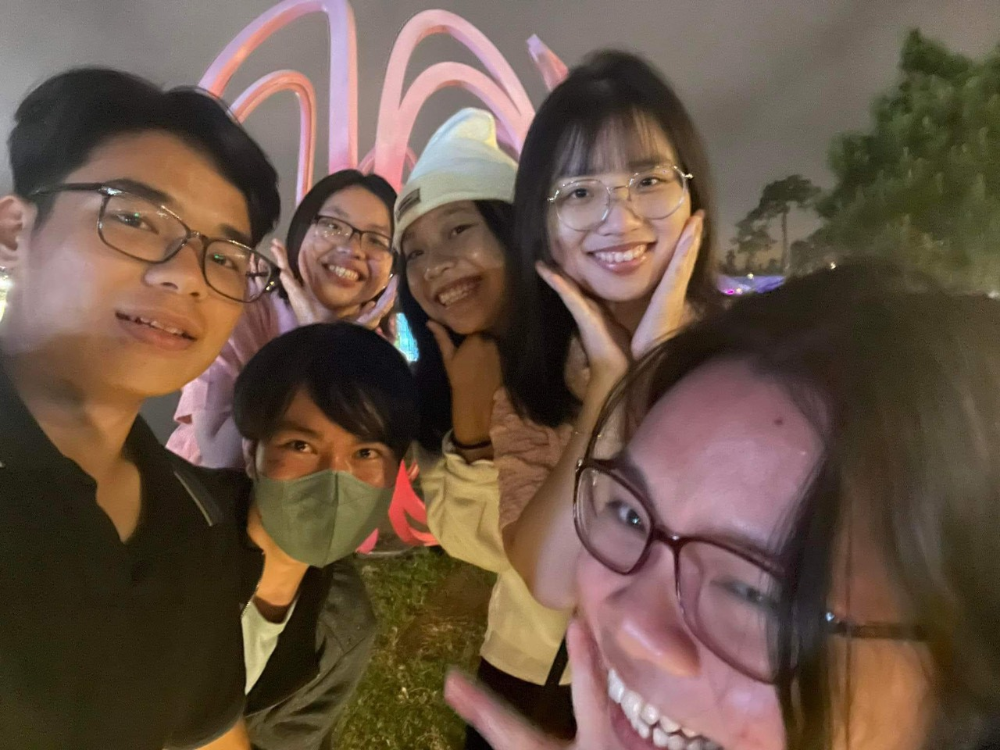
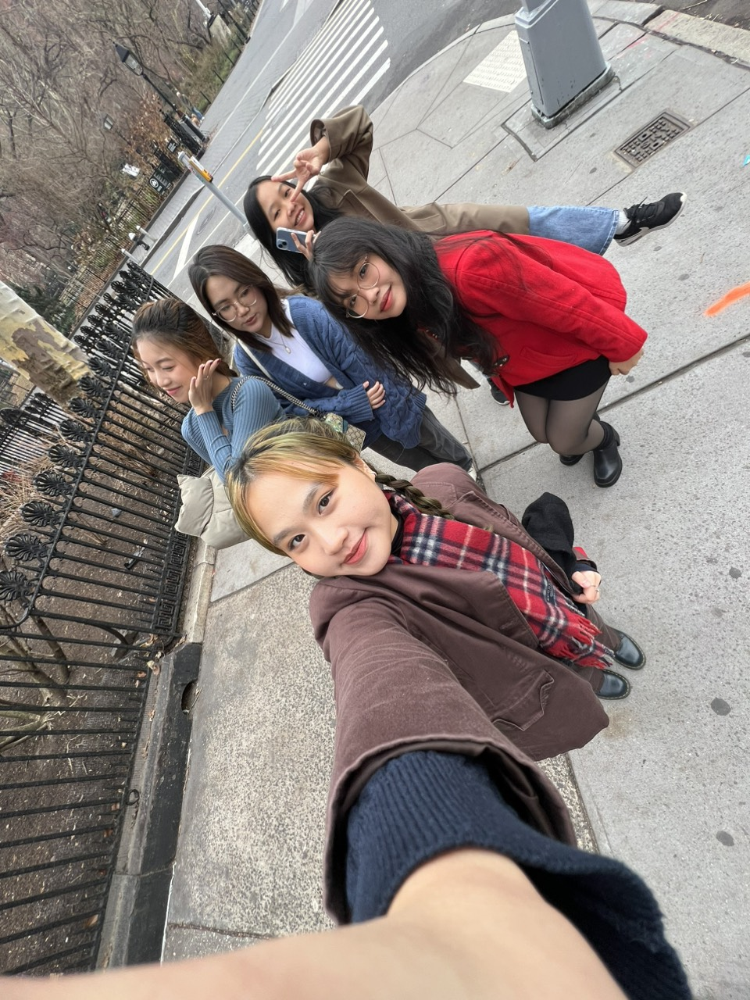

I quite like to go to Dalat with my high school friends during every holiday. It only takes us 7 hours to travel from Ho Chi Minh city to Dalat, so we have traveled to Dalat nearly 5 times last year. Even though I have been to Dalat many times, I still find Dalat to have a mysterious and indescribable beauty.
 

New York City is the most vibrant city I have ever been to. During my first winter break in college, I went to New York for 3 weeks, celebrating Christmas and New Year there. It was my first time celebrating New Year away from my family, and I was happy to meet Vietnamese people in New York, whom I consider my second family. I cherish this place because it brings me warmth in the cold winter in a foreign land.
Since I was a child, I have dreamed of visiting Harvard University. So, on my trip to New York, I took the Amtrak about 2 hours to Boston to admire the beauty of Harvard. Boston is not as bustling as New York, but not as quiet as Memphis, this place has a feeling of both closeness and strangeness to me. If I have the chance, I still want to go to Boston again, experience a few days here.